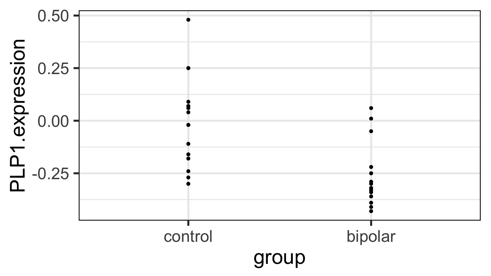
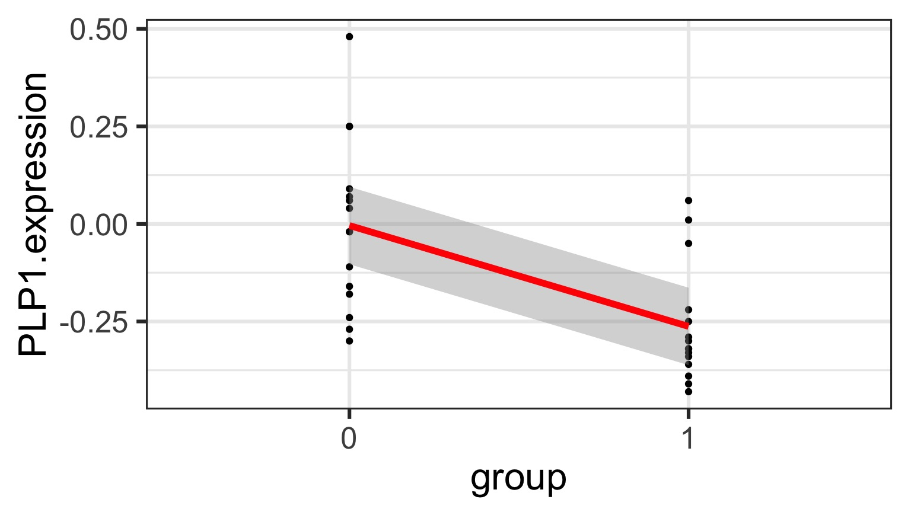
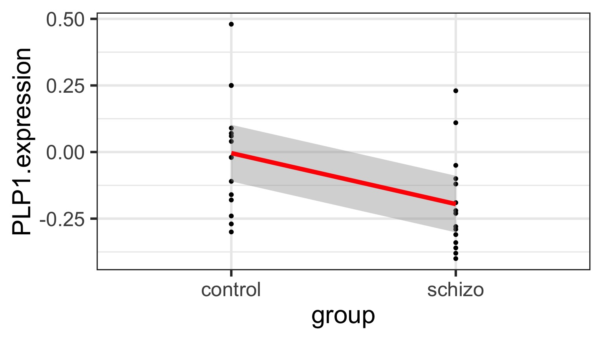
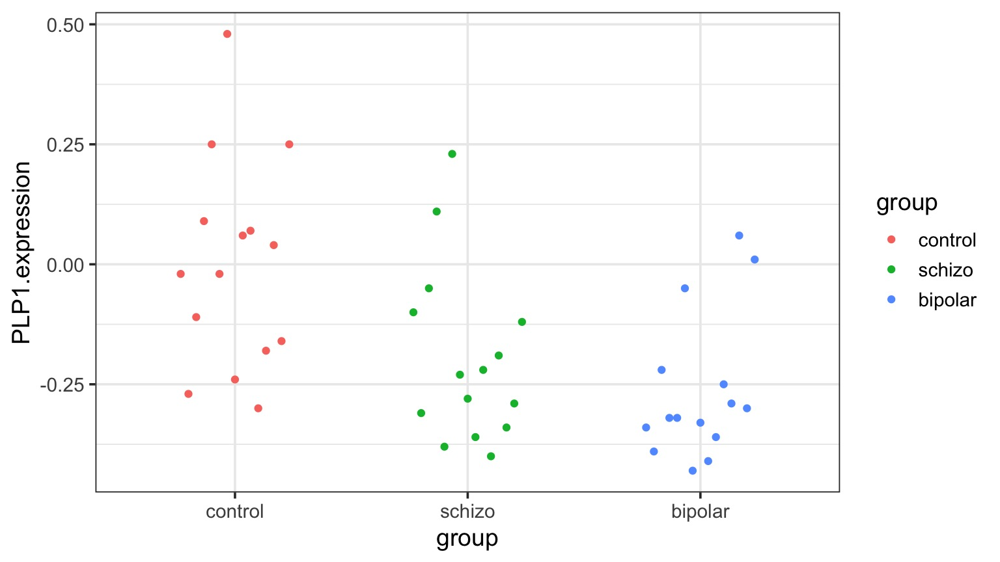
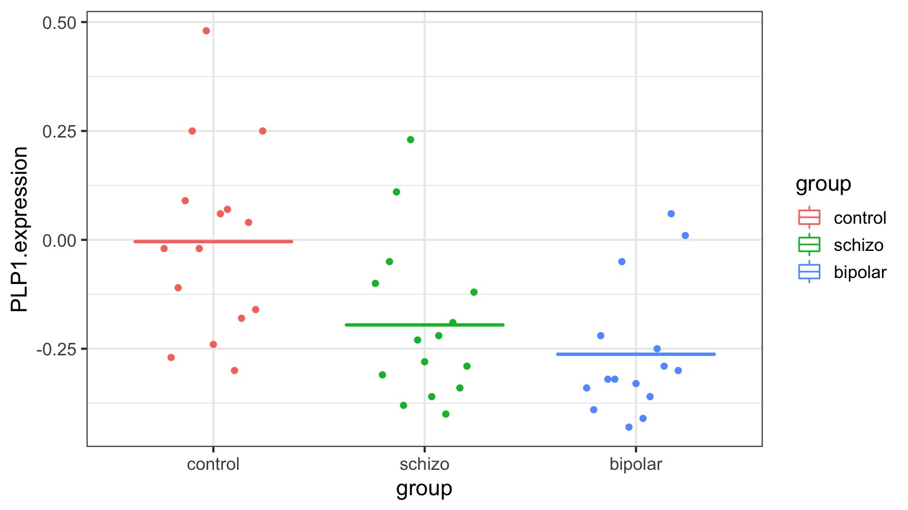
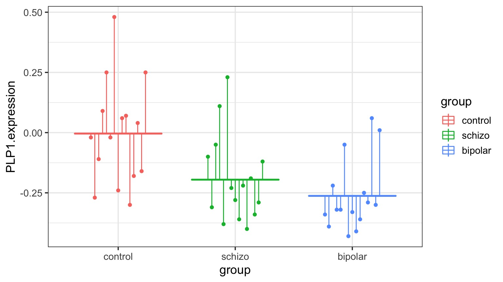

Experiments and ANOVA
Outline
https://etherpad.wikimedia.org/p/607-anova-2018- Experiments & Design
- Analysis of Experiments with Categorical Treatments
- ANOVA!!!
Why Do Experiments?
Causal Diagram of the World

In an experiment, we want to isolate effects between pairs of variables.
Manipulation to Determine Causal Relationship

Manipulation to Determine Causal Relationship

Experimental manipulation (done right) severs the link between a driver and its causes. We can now test the causal effect of changing one this driver on a response variable.
Other Sources of Variation are “Noise”
Properly designed experiments will have a distribution of other variables effecting our response variable. We want to reduce BIAS due to biological processes
How can experimental replicates go awry?
- Conditions in replicates are not representative
- Replicates do not have equal chance of all types of environmental variability
- Replicates are not is not independent
How would you place replicates across this “field”?
Stratified or Random Treatment Assignment
How is your population defined?
What is the scale of your inference?
What might influence the inclusion of a environmental variability?
How important are external factors you know about?
How important are external factors you cannot assess?
Other Sources of Variation are now “Noise”

AND - this term also includes observer error. We must minimize OBSERVER BIAS as well.
Removing Bias and Confounding Effects

(Hurlbert 1984)
Ensuring that our Signal Comes from our Manipulation
CONTROL
A treatment against which others are compared
Separate out causal v. experimental effects
Techniques to remove spurious effects of time, space, gradients, etc.
Ensuring our Signal is Real
REPLICATION
How many points to fit a probability distribution?
Ensure that your effect is not a fluke10
- \(\frac{p^{3/2}}{n}\) should approach 0
- Portnoy 1988 Annals of Statistics
i.e.,\(\sim\) 5-10 samples per paramter (1 treatment = 1 parameter, but this is total # of samples)
Outline
https://etherpad.wikimedia.org/p/607-anova-2018- Experiments & Design
- Analysis of Experiments with Categorical Treatments
- ANOVA!!!
Analysis of Models with Categorical Predictors
What are our “treatments?”
Treatments can be continuous - or grouped into discrete categories
Why categories for treatments?
- When we think of experiments, we think of manipulating categories
- Control, Treatment 1, Treatment 2
- Models with categorical predictors still reflect an underlying data and error generating processes
- In many ways, it’s like having many processes generating data, with each present or absent
- Big advantage: don’t make assumptions of linearity about relationships between treatments
Categorical Predictors Ubiquitous
- Treatments in an Experiment
- Spatial groups - plots, Sites, States, etc.
- Individual sampling units
- Temporal groups - years, seasons, months
Modeling categorical predictors in experiments
Categorical Predictors: Gene Expression and Mental Disorders


The data

The Steps of Statistical Modeling
- What is your question?
- What model of the world matches your question?
- Build a test
- Evaluate test assumptions
- Evaluate test results
- Visualize
Traditional Way to Think About Categories

What is the variance between groups v. within groups?
But What is the Underlying Model ?

But What is the Underlying Model ?
Underlying linear model with control = intercept, dummy variable for bipolar
But What is the Underlying Model ?

Underlying linear model with control = intercept, dummy variable for bipolar
But What is the Underlying Model ?

Underlying linear model with control = intercept, dummy variable for schizo
Different Ways to Write a Categorical Model
- \(y_{ij} = \bar{y} + (\bar{y}_{i} - \bar{y}) + ({y}_{ij} - \bar{y}_{i})\)
- \(y_{ij} = \mu + \alpha_{i} + \epsilon_{ij}\)
\(\epsilon_{ij} \sim N(0, \sigma^{2} )\)
- \(y_{j} = \beta_{0} + \sum \beta_{i}x_{i} + \epsilon_{j}\)
\(x_{i} = 0,1\)
Partioning Model
\[\large y_{ij} = \bar{y} + (\bar{y}_{i} - \bar{y}) + ({y}_{ij} - \bar{y}_{i})\]Means Model
\[\large y_{ij} = \mu + \alpha_{i} + \epsilon_{ij}\]\[\epsilon_{ij} \sim N(0, \sigma^{2} )\]
Linear Dummy Variable Model
\[\large y_{ij} = \beta_{0} + \sum \beta_{i}x_{i} + \epsilon_{ij}, \qquad x_{i} = 0,1\]
\[\epsilon_{ij} \sim N(0, \sigma^{2})\]
- \(x_{i}\) inidicates presence/abscence (1/0) of a category
- This coding is called a Dummy variable
- Note similarities to a linear regression
- Often one category set to \(\beta_{0}\) for ease of fitting, and other \(\beta\)s are different from it
- Or \(\beta_{0}\) = 0
The Steps of Statistical Modeling
- What is your question?
- What model of the world matches your question?
- Build a test
- Evaluate test assumptions
- Evaluate test results
- Visualize
You have Fit a Valid Model. Now…
Does your model explain variation in the data?
Are your coefficients different from 0?
How much variation is retained by the model?
How confident can you be in model predictions?
Testing the Model
Ho = The model predicts no variation in the data.
Ha = The model predicts variation in the data.
Introducing ANOVA: Comparing Variation
Hypothesis Testing with a Categorical Model: ANOVA
\[H_{0} = \mu_{1} = \mu{2} = \mu{3} = ...\]
OR
\[\beta_{0} = \mu, \qquad \beta_{i} = 0\]
Linking your Model to Your Question
Data Generating Process:\[\beta_{0} + \sum \beta_{i}x_{i}\]
VERSUS
Error Generating Process \[\epsilon_i \sim N(0,\sigma)\]
Variability due to DGP versus EGP

Variability due to DGP versus EGP

Variability due to DGP versus EGP

F-Test to Compare
\(SS_{Total} = SS_{Between} + SS_{Within}\)
(Regression: \(SS_{Total} = SS_{Model} + SS_{Error}\) )
F-Test to Compare
\(SS_{Between} = \sum_{i}\sum_{j}(\bar{Y_{i}} - \bar{Y})^{2}\), df=k-1
\(SS_{Within} = \sum_{i}\sum_{j}(Y_{ij} - \bar{Y_{i}})^2\), df=n-k
To compare them, we need to correct for different DF. This is the Mean Square.
MS = SS/DF, e.g, \(MS_{W} = \frac{SS_{W}}{n-k}\)
F-Test to Compare
\(F = \frac{MS_{B}}{MS_{W}}\) with DF=k-1,n-k
(note similarities to \(SS_{R}\) and \(SS_{E}\) notation of regression)
ANOVA
| Df | Sum Sq | Mean Sq | F value | Pr(>F) | |
|---|---|---|---|---|---|
| group | 2 | 0.5402533 | 0.2701267 | 7.823136 | 0.0012943 |
| Residuals | 42 | 1.4502267 | 0.0345292 | NA | NA |
Is using ANOVA valid?
Assumptions of Linear Models with Categorical Variables - Same as Linear Regression!
Independence of data points
Normality within groups (of residuals)
No relationship between fitted and residual values
Homoscedasticity (homogeneity of variance) of groups
- This is just an extension of \(\epsilon_i \sim N(0, \sigma)\) where \(\sigma\) is constant across all groups
Fitted v. Residuals
Residuals!
Leverage
Levene’s Test of Homogeneity of Variance
| Df | F value | Pr(>F) | |
|---|---|---|---|
| group | 2 | 1.006688 | 0.3740735 |
| 42 | NA | NA |
Levene’s test robust to departures from normality
What do I do if I Violate Assumptions?
Nonparametric Kruskal-Wallace (uses ranks)
log(x+1) or otherwise transform
GLM with ANODEV (two weeks!)
Kruskal Wallace Test
| statistic | p.value | parameter | method |
|---|---|---|---|
| 13.1985 | 0.0014 | 2 | Kruskal-Wallis rank sum test |
Can I do this Bayesian?
YES
The question is not if group matters, but how much.
Compare the relative magnitudes
| term | estimate | std.error | conf.low | conf.high |
|---|---|---|---|---|
| SD from Groups | 0.1396133 | 0.0340588 | 0.0740639 | 0.2094102 |
| SD from Residuals | 0.1860021 | 0.0046805 | 0.1815504 | 0.1957638 |
Percent might be a more familiar way to look at the Problem
| term | estimate | std.error | conf.low | conf.high |
|---|---|---|---|---|
| SD from Groups | 43.09062 | 6.148865 | 29.89045 | 52.81145 |
| SD from Residuals | 56.90938 | 6.148865 | 47.18855 | 70.10955 |